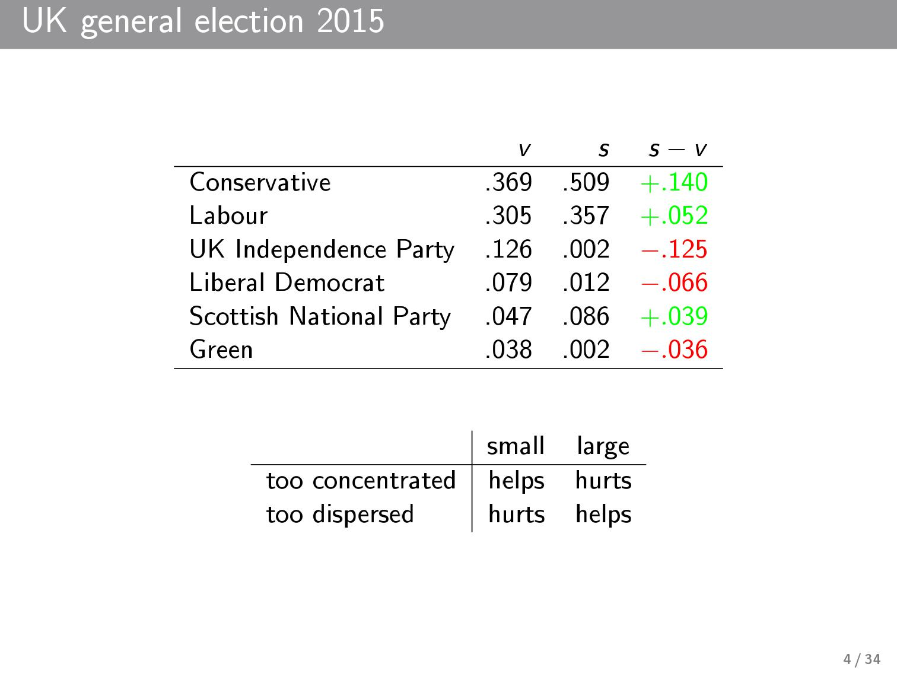
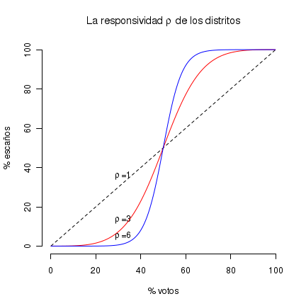

Measuring partisan bias in multi-party systems
Eric Magar (with Micah Altman, Mike McDonald, and Alex Trelles)
emagar@itam.edu
Motivation
Empirical procedure to measure and analyze the difference between the votes and seats that parties win in general elections
Central concern of electoral reform debates
Kendall&Stuart 1950, Rae 1967, Erikson 1972, Tufte 1973, Taagepera 1973, Johnston 1979, Gudgin&Taylor 1980, Grofman 1983, Cain 1985, Niemi&Fett 1986, King&Browning 1987, Gelman&King 1994, Balinski&Young 2001, Cox&Katz 2002, Engstrom 2006...
Methods exits, but limited to (exceptional) two-party competition
Contributions:
- Extension to multi-party competition
- Overcome small-N obstacle
- Application to recent Mexican elections
Overview
Key quantity of interest is the system's partisan bias = undue advantage conferred to some party in the conversion of votes into legislative seats
→ Potential distortion wherever districts are drawn to allocate seats
Theory highlights three sources of partisan bias
- Gerrymanders (eg., Cox&Katz 2002)
- Turnout differentials (Rosenstone&Hansen 1993)
- Malapportionment and demographic shifts (Johnston 1979)
Procedure measures partisan bias and its sources
Illustration

Background on Mexico
- Hegemonic party 1929–1997
- Three major parties (from left to right): PRD, PRI, and PAN and minors
- Chamber of Deputies elected every 3 yrs, concurrent w presidential race every 6 yrs
- Mixed system: 300 SMD + 200 PR seats
- Single-term limits lifted in 2018
- Autonomous regulator (IFE) in charge of elections and redistricting
Questions
Did 1997 reform remove party bias in representation?
- Potential problem wherever districts are drawn to allocate seats (Tufte 1973, Johnston 2002)
If party bias remains, what factors drive it? (Grofman et al. 1997)
- Do parties use redistricting in their advantage?
- How does secular demographic change affect parties?
- Turnout differentials?
Answers
- Persistent bias against the right
- But components of bias often cancel each other
What is partisan bias
It is the excess/defect seat share that a party winning half of the votes gets:
\(\lambda = (s | v=.5) - .5\)
- Two-party system assumed
- Constant-sum game
- Vote wasting (Calvo & Rodden 2015)
| small | large | |
| too concentrated | enjoys | suffers |
| too dispersed | suffers | enjoys |
problems with org table borders here
UK 2015: SNP v. LibDems
Obstacle 1: measure partisan bias
Fitting votes–seats curves: \(s = f(v)\)
(Rae 1967, Tufte 1973, King&Browning 1987)
\(\frac{s}{1-s} = \lambda \left( \frac{v}{1-v} \right)^\rho \iff \text{logit}(s) = \ln(\lambda) + \rho \text{logit}(v)\)

Steps to export
M-x load-library RET ox-revealC-c C-e R R
Resources (one floor down!)
http://nwidger.github.io/blog/post/making-a-reveal.js-presentation-with-org-reveal/
You insert images thus
#+ATTR_HTML: :height 200%, :width 200% ./images/myimage.png
{kind=link}
Bullets
- one
- two
- three
Configure
The HLevel
Org-reveal maps each heading and its contents to one Reveal.js slide. Since Reveal.js arranges slides into a 2-dimensional matrix, Org-reveal use a HLevel value to decide whether to map headings to horizontal or vertical slides.
- Headings of level less than or equal to HLevel are mapped to horizontal slides.
- Headings with a deeper level are mapped to vertical slides.
HLevel's default value is 1, means only level 1 headings are arranged horizontally. Deeper headings are mapped to vertical slides below their parent level 1 heading.
HLevel's Affects on Slides Layout
Assume we have a simple Org file as below:
* H1 * H2 ** H2.1 *** H2.1.1 * H3
If HLevel is 1, the default value, headings H2.1 and H2.1.1 will be mapped to vertical slides below the slides of heading H2.

If HLevel is changed to 2, slides of heading H2.1 will be changed to the main horizontal queue, and slides of heading H2.1.1 will be a vertical slide below it.

Configure HLevel's Value
- Change variable
org-reveal-hlevel's value to set HLevel globally.
For example, add the following statement to your.emacsfile.
(setq org-reveal-hlevel 2)
- Setting Org files local HLevel to option
REVEAL_HLEVEL.
#+REVEAL_HLEVEL 2
Force Split
If one heading has too many things to fit into one slide, you can split the contents into multiple vertical slides manually, by inserting
#+REVEAL: split
Now a new slide begins after #+REVEAL keyword.
Select Theme and Transition
Themes and transition styles are set globally throughout the whole
file by setting options REVEAL_THEME, REVEAL_TRANS, and REVEAL_SPEED.
For an example, please check the heading part of this document.
Available themes can be found in "css/theme/" in the reveal.js directory.
Available transitions are: default|cube|page|concave|zoom|linear|fade|none.
Set Slide Background
Slide background can be set to a color, an image or a repeating image array by setting heading properties.
Single Colored Background
Set property reveal_background to either an RGB color value, or any
supported CSS color format.
*** Single Colored Background :PROPERTIES: :reveal_background: #123456 :END:
Single Image Background
Set property reveal_background to an URL of background image.
Set property reveal_background_trans to slide to make background image
sliding rather than fading.
*** Single Image Background :PROPERTIES: :reveal_background: ./images/whale.jpg :reveal_background_trans: slide :END:
Repeating Image Background
Resize background image by setting property
reveal_background_size to a number.
Set property reveal_background_repeat to repeat to repeat
image on the background.
*** Repeating Image Background :PROPERTIES: :reveal_background: ./images/whale.jpg :reveal_background_size: 200px :reveal_background_repeat: repeat :END:
Title Slide Background Image
To set the title slide's background image, please specify the following options:
REVEAL_TITLE_SLIDE_BACKGROUND: A URL to the background image.REVEAL_TITLE_SLIDE_BACKGROUND_SIZE: HTML size specification, e.g.200px.REVEAL_TITLE_SLIDE_BACKGROUND_REPEAT: set torepeatto repeat the image.
Slide Size
Reveal.js scales slides to best fit the display resolution, but you can
also specify the desired size by settings the option tags width and height.
The scaling behavior can also be constrained by setting following options:
#+REVEAL_MARGIN:- a float number, the factor of empty area surrounding slide contents.
#+REVEAL_MIN_SCALE:- a float number, the minimum scaling down ratio.
#+REVEAL_MAX_SCALE:- a float number, the maximum scaling up ratio.
Slide Numbering
Activate slide numbers by setting #+REVEAL_SLIDE_NUMBER: to t (true).
Slide Header/Footer
Specify Slide header/footer by #+REVEAL_SLIDE_HEADER: and
#+REVEAL_SLIDE_FOOTER:. The option content will be put into
divisions of class slide-header and slide-footer, so you can
control their appearance in custom CSS file(see Extra Stylesheets).
Fragmented Contents
Make contents fragmented (show up one-by-one) by setting option
ATTR_REVEAL with property ":frag frag-style", as illustrated
below.
Paragraphs can be fragmented.
- Lists can
- be fragmented.
Pictures, tables and many other HTML elements can be fragmented.
Fragment Styles
Available fragment styles are:
- grow
- shrink
- roll-in
- fade-out
- highlight-red
- highlight-green
- highlight-blue
- appear
Setting :frag t will use Reveal.js default fragment style, which
can be overridden by local option #+REVEAL_DEFAULT_FRAG_STYLE or
global variable org-reveal-default-frag-style.
Fragment Index
Fragment sequence can be changed by assigning adding :frag_idx
property to each fragmented element.
And, this paragraph shows at last.
This paragraph shows secondly.
This paragraph shows at first.
List Fragments
#+ATTR_REVEAL: :frag frag-style above a list defines fragment
style for the list as a whole.
- All items grow.
- As a whole.
To define fragment styles for every list item, please enumerate each item's style in a lisp list.
none in the style list will disable fragment for the
corresponding list item.
Custom fragment sequence should also be enumerated for each list item.
An example:
#+ATTR_REVEAL: :frag (grow shrink roll-in fade-out none) :frag_idx (4 3 2 1 -)
* I will grow.
* I will shrink.
* I rolled in.
* I will fade out.
* I don't fragment.
- I will grow.
- I will shrink.
- I rolled in.
- I will fade out.
- I don't fragment.
When there is :frag_idx specified, insufficient fragment style
list will be extended by its last element. So a :frag (appear)
assigns each item of a list the appear fragment style.
#+ATTR_REVEAL: :frag (appear)
* I appear.
* I appear.
* I appear.
- I appear.
- I appear.
- I appear.
Data State
Set property reveal_data_state to headings to change this slide's
display style, as illustrated above.
Available data states are: alert|blackout|soothe.
Plug-ins
Reveal.js provides several plug-in functions.
- reveal-control : Show/hide browsing control pad.
- reveal-progress : Show/hide progress bar.
- reveal-history : Enable/disable slide history track.
- reveal-center : Enable/disable slide centering.
- multiplex : Enable audience to view presentation on secondary devices.
Configure Plug-ins
Each plugin can be toggled on/off by adding #+OPTIONS tags or
by setting custom variables.
#+OPTIONStags:
reveal_control,reveal_progress,reveal_history,reveal_center,reveal_rolling_links,reveal_keyboard,reveal_overview- Custom variables:
org-reveal-control,org-reveal-progress,org-reveal-history,org-reveal-center,org-reveal-rolling-links,org-reveal-keyboard,org-reveal-overview
For an example, please refer to the heading part of this document.
Source Codes
Org-reveal use Org-Babel to highlight source codes.
Codes copied from Haskell Wiki.
fibs = 0 : 1 : next fibs
where next (a : t@(b:_)) = (a+b) : next t
If you saw odd indentation, please set variable org-html-indent
to nil and export again.
If code is not highlighted, please make sure htmlize.el is installed.
MathJax
\({n! \over k!(n-k)!} = {n \choose k}\)
LateX equation are rendered in native HTML5 contents.
IMPORTANT: Displaying equations requires internet connection to mathjax.org or local MathJax installation.
IMPORTANT 2: MathJax is disabled by default to reduce internet
traffic. Set #+OPTIONS tag reveal_mathjax or variable
org-reveal-mathjax to true to enable it. For local MathJax
installation, set option REVEAL_MATHJAX_URL to the URL pointing
to the local MathJax location.
Preamble and Postamble
You can define preamble and postamble contents which will not be shown as slides, but will be exported into the body part of the generated HTML file, at just before and after the slide contents.
Change preamble and postamble contents globally by setting variable
org-reveal-preamble and org-reveal-postamble.
Change preamble and postamble contents locally by setting options
REVEAL_PREAMBLE and REVEAL_POSTAMBLE, as illustrated at the
heading part of this document.
To add custom contents into HTML <head> parts, set contents to
variable org-reveal-head-preamble or option
REVEAL_HEAD_PREAMBLE.
Generating Pre/Postamble by Emacs-Lisp Functions
If the contents of pre/postamble is the name of an evaluated Emacs-Lisp function, which must accept an argument of Org-mode info and return a string, the returned string will be taken as pre/postamble contents.
So you can embed the Emacs-Lisp function as an Org-Babel source block and mark it to be evaluated when exporting the document.
Raw HTML in Slides
Besides the Org contents, you can embed raw HTML contents
into slides by placing a #+REVEAL_HTML keyword.
The famous cat jump fail:
Speaker Notes
Reveal.js supports speaker notes, which are displayed in a separate browser window. Pressing 's' on slide's windows will pop up a window displaying the current slide, the next slide and the speaker notes on the current slide.
Org-reveal recognize texts between #+BEGIN_NOTES and #+END_NOTES
as speaker notes. See the example below.
* Heading 1 Some contents. #+BEGIN_NOTES Enter speaker notes here. #+END_NOTES
Speaker notes requires the notes plug-in. If you changed default
plug-in setting by specifying #+REVEAL_PLUGINS or by setting
variable org-reveal-plugins, please make sure notes is in the
plug-in list to enable speaker notes.
Due to a bug in Reveal.js, sometimes the speaker notes window shows only blank screens. A workaround to this issue is to put the presentation HTML file into the Reveal.js root directory and reopen it in the browser.
Multiplexing
Reveal.js supports multiplexing, which allows allows your audience to view the slides of the presentation you are controlling on their own phone, tablet or laptop. As the master presentation navigates the slides, all client presentations will update in real time. See a demo at http://revealjs.jit.su/.
You can enable multiplexing for your slide generation by including the following options:
#+REVEAL_MULTIPLEX_ID: [Obtained from the socket.io server. ] #+REVEAL_MULTIPLEX_SECRET: [Obtained from socket.io server. Gives the master control of the presentation.] #+REVEAL_MULTIPLEX_URL: http://revealjs.jit.su:80 [Location of socket.io server] #+REVEAL_MULTIPLEX_SOCKETIO_URL: http://cdnjs.cloudflare.com/ajax/libs/socket.io/0.9.10/socket.io.min.js #+REVEAL_PLUGINS: ([any other plugins you are using] multiplex)
You must generate unique values for the REVEAL_MULTIPLEX_ID and
REVEAL_MULTIPLEX_SECRET options, obtaining these from the socket.io server
you are using.
If you include these options in your .org file, reveal-org will enable your
.html file as the master file for multiplexing and will generate a file named
in the form [filename]_client.html in the same directory as the client
.html file. Provide your audience with a link to the client file to allow
them to track your presentation on their own device.
Extra Stylesheets
Set REVEAL_EXTRA_CSS to a stylesheet file path in order to load extra custom
styles after loading a theme.
#+REVEAL_EXTRA_CSS: url-to-custom-stylesheet.css
Select Built-In Scripts
Set option REVEAL_PLUGINS or variable org-reveal-plugins to a
lisp list to select built-in scripts.
Available built-in scripts are: classList/markdown/highlight/zoom/notes/search/remotes.
Default built-ins are: classList/markdown/highlight/zoom/notes/multiplex.
The following examples select markdown and highlight only.
#+REVEAL_PLUGINS: (markdown highlight)
Extra Dependent Script
Set REVEAL_EXTRA_JS to the url of extra reveal.js dependent
script if necessary.
#+REVEAL_EXTRA_JS: url-to-custom-script.js
Extra Slide attribute
Set property reveal_extra_attr to headings to add any necessary attributes
to slides.
Tips
Disable Heading Numbers
Add num:nil to #+OPTIONS
#+OPTIONS: num:nil
Internal Links
Reveal.js supports only jump between slides, but not between elements on slides. Thus, we can only link to headlines in an Org document.
You can create links pointing to a headline's text, or its custom-id, as the examples below:
Thanks
Courtesy to:
The powerful Org-mode,
the impressive Reveal.js
and the precise MathJax